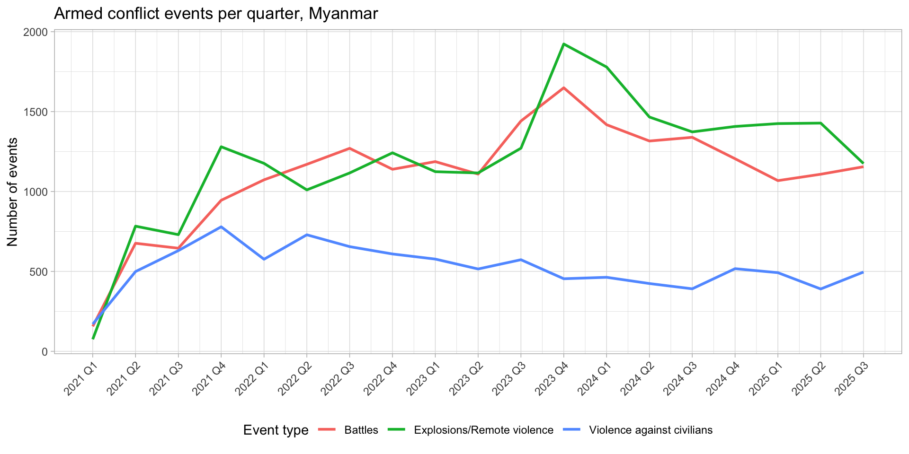
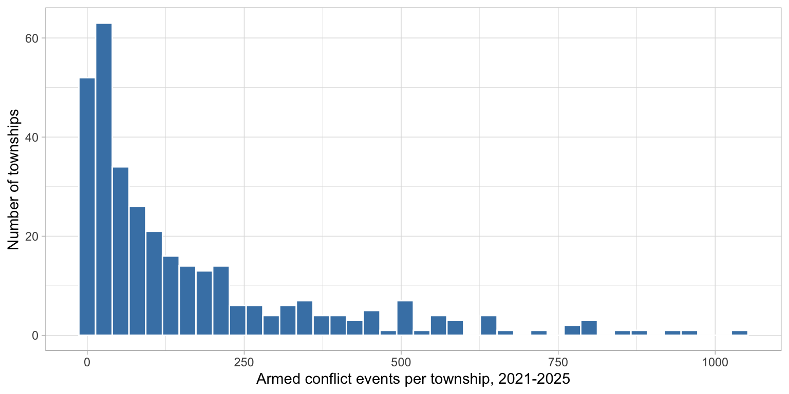
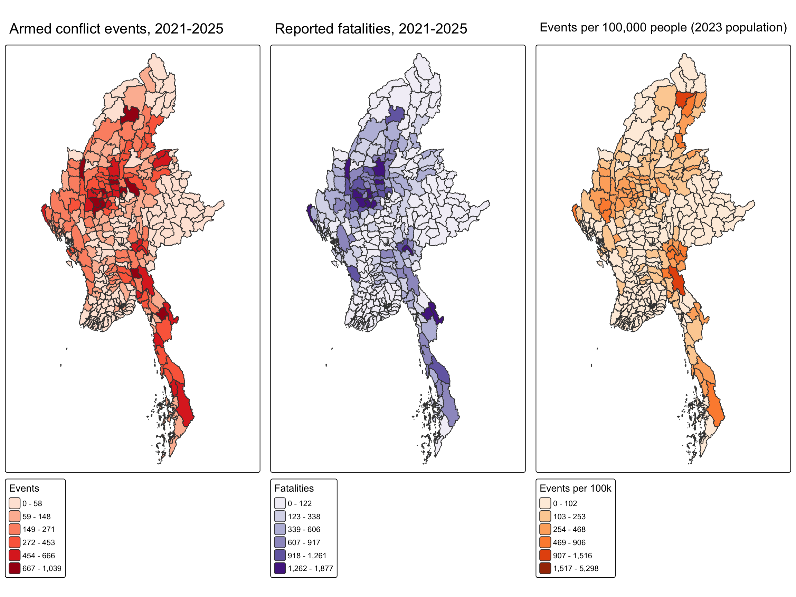
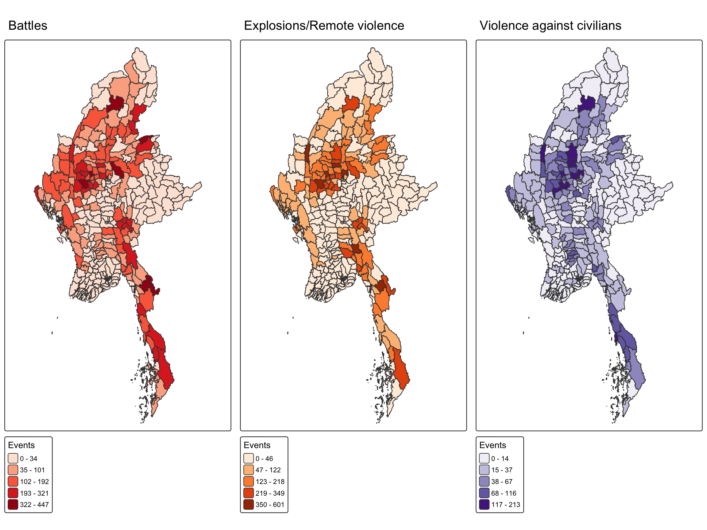
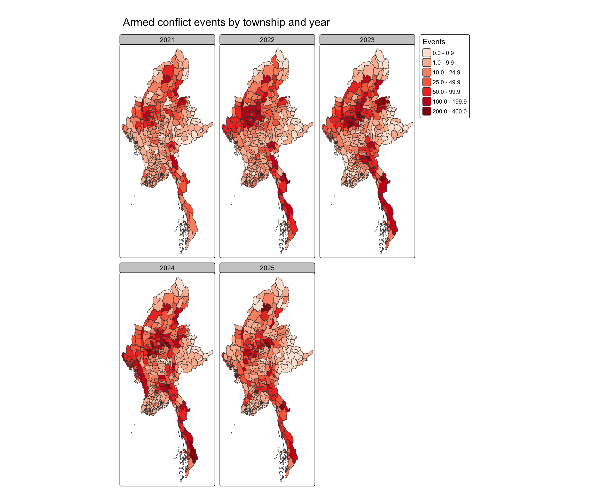
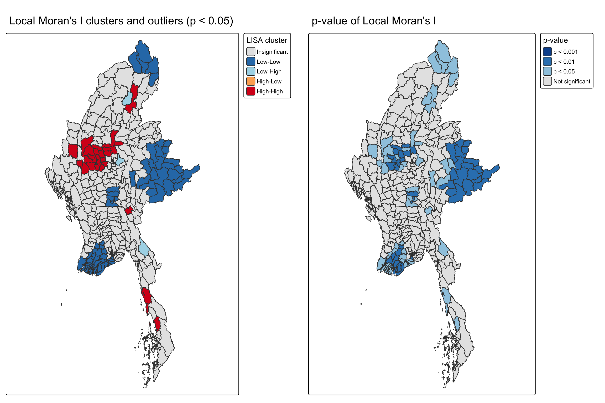
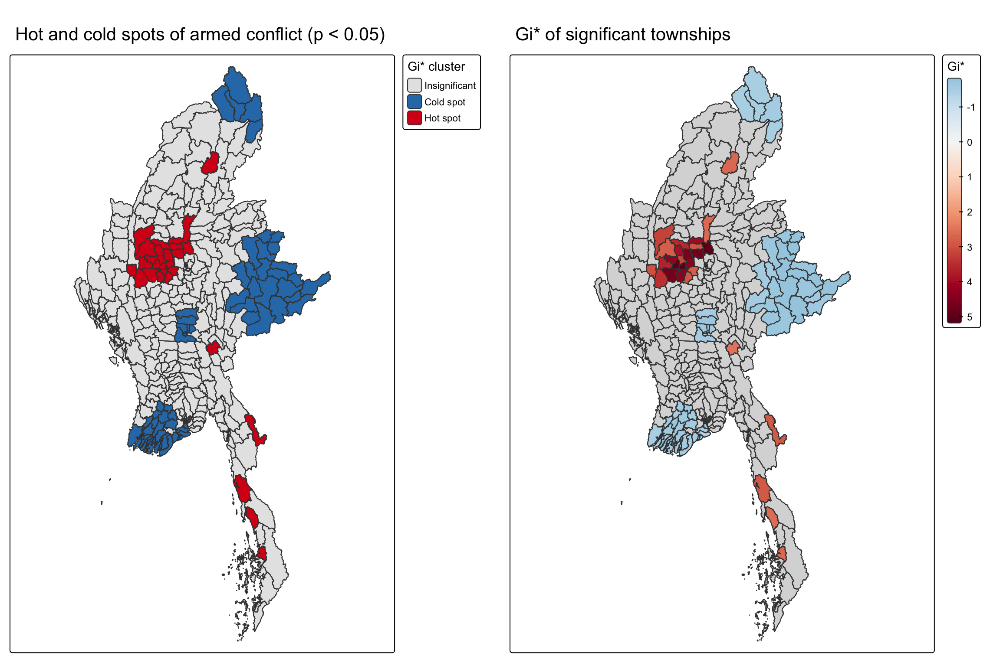
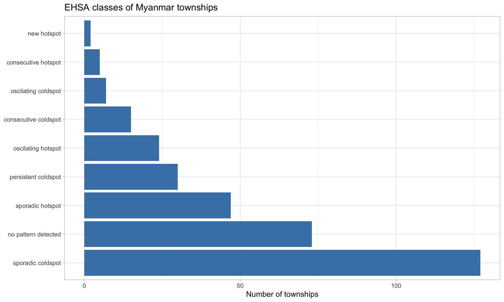
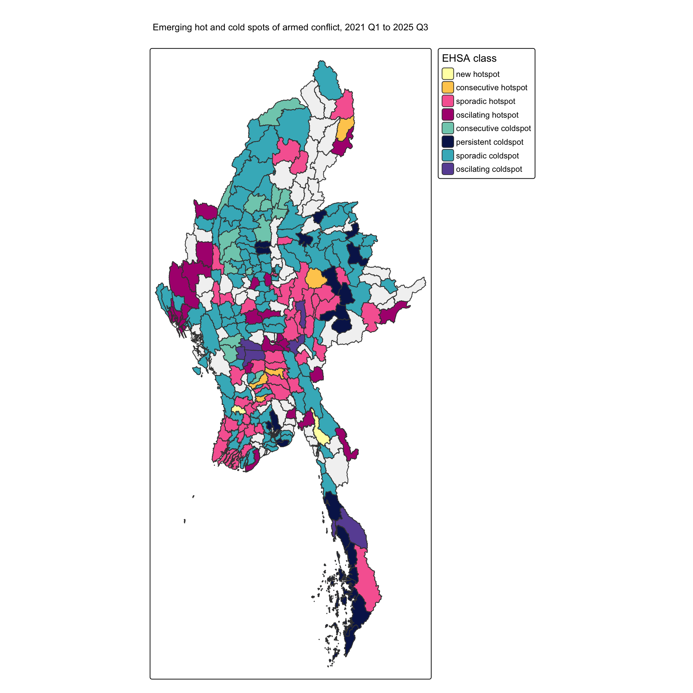
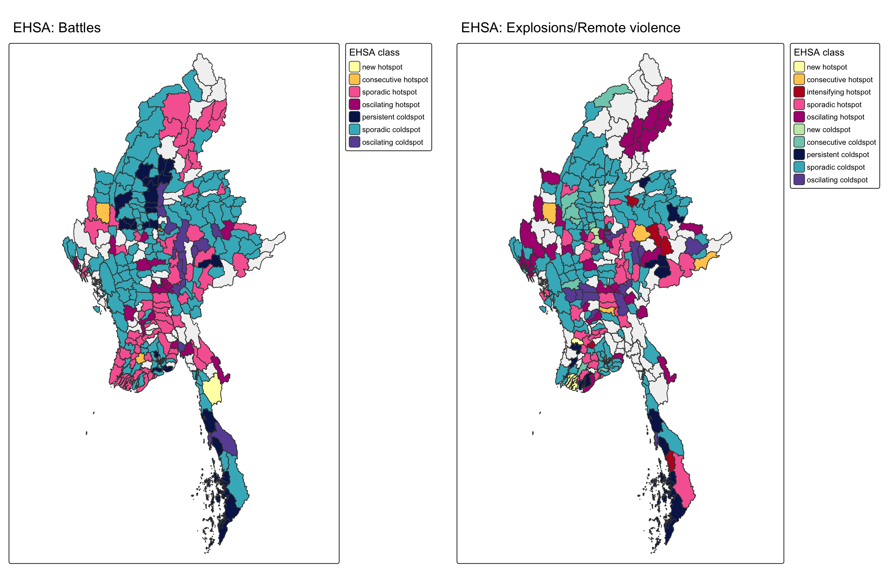

pacman::p_load(sf, sfdep, tmap, tidyverse,
plotly, Kendall, knitr)
set.seed(1234)Take-home Exercise 2: Geospatial Analytics for Peace
Local and Emerging Hot Spots of Armed Conflict in Myanmar, January 2021 to September 2025
View the Executive Summary (slides) →
1. Introduction
Since the military coup of 1 February 2021, Myanmar has experienced a sharp escalation of armed conflict between the military (State Administration Council), People’s Defence Forces, and long-standing ethnic armed organisations. Violence is not spread evenly across the country: it concentrates in some townships, spreads to their neighbours, and shifts over time as front lines move.
This study uses the Armed Conflict Location & Event Data (ACLED) for Myanmar and the MIMU township boundaries to answer two questions at the township level.
1.1 Research questions
- Where does armed conflict cluster, and which townships are outliers compared with their neighbours? (Local Measures of Spatial Autocorrelation, LMSA)
- How are these clusters changing over time: are hot spots new, intensifying, persistent or diminishing? (Emerging Hot Spot Analysis, EHSA)
2. Getting Started
The packages used follow the earlier hands-on and in-class exercises. A fixed random seed makes all permutation tests reproducible.
| Package | Purpose |
|---|---|
| sf | import, wrangle and transform geospatial data |
| sfdep | spatial weights, global and local Moran’s I, Gi*, space-time cube and EHSA |
| tmap | thematic mapping |
| tidyverse | data wrangling, dates and statistical graphics |
| plotly | interactive Mann-Kendall plot |
| Kendall | Mann-Kendall trend test |
| knitr | tables (kable()) |
3. The Data
| Dataset | Source | Format | Accessed | Coverage |
|---|---|---|---|---|
| ACLED Myanmar events | ACLED (acleddata.com) | CSV | 2026-10-02 | Myanmar, 1 Jan 2021 to 30 Sep 2025 |
| Myanmar Township Boundaries MIMU v9.4 | MIMU Geonode | Shapefile | 2026-10-16 | 330 townships |
| Subnational population statistics, 2023 (ADM3) | HDX (UNFPA, DOP, MIMU) | CSV | 2026-10-16 | 330 townships |
NoteData licensing
ACLED data and MIMU geospatial data have redistribution restrictions. The raw files are therefore not pushed to GitHub (see .gitignore); readers can download them from the sources above and place them in the data folder (the shapefile in its own sub-folder, data/mmr_polbnda_adm3_250k_mimu_1) to reproduce the analysis.
3.1 Importing the township boundaries
In the code chunk below, st_read() of sf package is used to import the MIMU township boundaries.
mmr_raw <- st_read(dsn = "data/mmr_polbnda_adm3_250k_mimu_1",
layer = "mmr_polbnda_adm3_250k_mimu_1")Reading layer `mmr_polbnda_adm3_250k_mimu_1' from data source
`/Users/wangxiaohan/ISSS626-GAA/Take-home_Ex/Take-home_Ex02/data/mmr_polbnda_adm3_250k_mimu_1'
using driver `ESRI Shapefile'
Simple feature collection with 330 features and 8 fields
Geometry type: MULTIPOLYGON
Dimension: XY
Bounding box: xmin: 92.1721 ymin: 9.605884 xmax: 101.17 ymax: 28.54554
Geodetic CRS: WGS 84The layer is in WGS 84 (EPSG:4326). The number of townships and the uniqueness of the township codes are checked first.
nrow(mmr_raw)[1] 330sum(duplicated(mmr_raw$TS_PCODE))[1] 0st_transform() projects the layer to WGS 84 / UTM zone 47N (EPSG:32647), so that distances are measured in metres. The geometries are then checked with st_is_valid(), and st_make_valid() repairs any invalid polygons. The check is done after projecting, so that sf uses planar (GEOS) rather than spherical (s2) validity rules. Only the columns needed for the analysis are kept.
mmr_ts <- mmr_raw %>%
st_transform(crs = 32647) %>%
select(ST, ST_PCODE, DT, DT_PCODE, TS, TS_PCODE)
sum(!st_is_valid(mmr_ts))[1] 0mmr_ts <- mmr_ts %>%
st_make_valid() %>%
st_cast("MULTIPOLYGON")
table(st_geometry_type(mmr_ts))
GEOMETRY POINT LINESTRING POLYGON
0 0 0 0
MULTIPOINT MULTILINESTRING MULTIPOLYGON GEOMETRYCOLLECTION
0 0 330 0
CIRCULARSTRING COMPOUNDCURVE CURVEPOLYGON MULTICURVE
0 0 0 0
MULTISURFACE CURVE SURFACE POLYHEDRALSURFACE
0 0 0 0
TIN TRIANGLE
0 0 st_crs(mmr_ts)$epsg[1] 32647st_make_valid() can return a mix of POLYGON and MULTIPOLYGON features, which sf stores as a generic GEOMETRY column. st_cast() converts every township to MULTIPOLYGON, because sfdep functions such as st_knn() only recognise POLYGON or MULTIPOLYGON columns.
table(mmr_ts$ST)
Ayeyarwady Bago (East) Bago (West) Chin Kachin Kayah
26 14 14 9 18 7
Kayin Magway Mandalay Mon Nay Pyi Taw Rakhine
7 25 28 10 8 17
Sagaing Shan (East) Shan (North) Shan (South) Tanintharyi Yangon
37 10 24 21 10 45 3.2 Importing the ACLED data
In the code chunk below, read_csv() of readr is used to import the ACLED file.
acled_raw <- read_csv("data/ACLED_Data_Myanmar_Jan2021-Sep2025.csv")
glimpse(acled_raw)Rows: 87,109
Columns: 31
$ event_id_cnty <chr> "MMR10920", "MMR10906", "MMR10932", "MMR10933", "MM…
$ event_date <date> 2021-01-01, 2021-01-01, 2021-01-01, 2021-01-01, 20…
$ year <dbl> 2021, 2021, 2021, 2021, 2021, 2021, 2021, 2021, 202…
$ time_precision <dbl> 1, 1, 1, 1, 1, 1, 1, 1, 1, 1, 1, 1, 1, 1, 1, 1, 1, …
$ disorder_type <chr> "Political violence", "Political violence", "Politi…
$ event_type <chr> "Violence against civilians", "Battles", "Battles",…
$ sub_event_type <chr> "Attack", "Armed clash", "Armed clash", "Armed clas…
$ actor1 <chr> "Unidentified Armed Group (Myanmar)", "PSLF/TNLA: P…
$ assoc_actor_1 <chr> NA, NA, NA, NA, NA, NA, NA, NA, NA, NA, NA, NA, NA,…
$ inter1 <chr> "Political militia", "Rebel group", "Rebel group", …
$ actor2 <chr> "Civilians (Myanmar)", "RCSS/SSA-S: Restoration Cou…
$ assoc_actor_2 <chr> NA, NA, NA, NA, NA, NA, NA, NA, NA, NA, NA, NA, "Go…
$ inter2 <chr> "Civilians", "Rebel group", "Rebel group", "Rebel g…
$ interaction <chr> "Political militia-Civilians", "Rebel group-Rebel g…
$ civilian_targeting <chr> "Civilian targeting", NA, NA, NA, NA, NA, NA, NA, "…
$ iso <dbl> 104, 104, 104, 104, 104, 104, 104, 104, 104, 104, 1…
$ region <chr> "Southeast Asia", "Southeast Asia", "Southeast Asia…
$ country <chr> "Myanmar", "Myanmar", "Myanmar", "Myanmar", "Myanma…
$ admin1 <chr> "Shan-North", "Shan-North", "Shan-North", "Shan-Nor…
$ admin2 <chr> "Muse", "Kyaukme", "Kyaukme", "Kyaukme", "Sittwe", …
$ admin3 <chr> "Muse", "Kyaukme", "Hsipaw", "Namtu", "Sittwe", "Na…
$ location <chr> "Muse", "Kyaukme", "Hsipaw", "Namtu", "Sittwe", "Pa…
$ latitude <dbl> 23.9933, 22.5392, 22.6166, 23.0766, 20.1462, 22.960…
$ longitude <dbl> 97.9103, 97.0343, 97.3003, 97.4033, 92.8984, 97.511…
$ geo_precision <dbl> 2, 2, 2, 2, 2, 1, 2, 1, 1, 2, 2, 2, 2, 1, 2, 2, 2, …
$ source <chr> "Mizzima; Shan Herald Agency for News; Shwe Phee My…
$ source_scale <chr> "Subnational-National", "Subnational", "Other", "Ot…
$ notes <chr> "On 1 January 2021, in Hko Wein village or Muse tow…
$ fatalities <dbl> 1, 0, 0, 0, 0, 0, 0, 0, 0, 0, 3, 0, 1, 0, 0, 0, 0, …
$ tags <chr> "Terrorist activity", "Insurgency", "Insurgency", "…
$ timestamp <dbl> 1754410549, 1753971383, 1753971383, 1753971383, 178…event_date is already parsed as a date (<date>), and latitude, longitude and fatalities are numeric.
3.3 Importing the population data
pop_raw <- read_csv("data/mmr_admpop_adm3_2023.csv")
pop <- pop_raw %>%
select(ADM3_PCODE, ADM3_NAME, T_TL) %>%
rename(TS_PCODE = ADM3_PCODE,
pop_2023 = T_TL)
nrow(pop)[1] 3304. Study Design
4.1 Event definition
An armed conflict event is one ACLED event between 1 January 2021 and 30 September 2025 whose event_type is Battles, Explosions/Remote violence or Violence against civilians. These are the three ACLED “political violence” event types that involve the use of force.
| Excluded event type | Reason |
|---|---|
| Protests | Mostly peaceful demonstrations, not armed conflict |
| Riots | Violent demonstrations or mob violence, not organised armed conflict; very few events |
| Strategic developments | Arrests, looting, agreements, base changes: context for the conflict, but not violent events |
4.2 Spatial and temporal units
| Item | Decision | Justification |
|---|---|---|
| Spatial unit | Township (MIMU v9.4, 330 townships) | Required by the brief; the smallest administrative unit with complete boundaries and population data |
| Variable | Number of armed conflict events per township | Counts are the most reliable ACLED measure; fatalities are less reliable (ACLED notes they are often estimated) |
| Temporal window | 1 Jan 2021 to 30 Sep 2025 | Required by the brief |
| Time slice | Quarter (19 quarters, 2021 Q1 to 2025 Q3) | Some events are only dated to the week or month (time_precision 2 or 3); quarters absorb this uncertainty, reduce the number of empty township-periods, and give enough time points (19) for the Mann-Kendall test |
| CRS | WGS 84 / UTM 47N (EPSG:32647) | Metric units for distance-based weights; zone 47N covers most of Myanmar |
4.3 Methodological decisions
| Decision | Choice | Justification |
|---|---|---|
| Joining events to townships | Point-in-polygon spatial join (st_join()) |
ACLED admin3 names do not always match MIMU names (Section 5.5) |
| Events outside all townships | Snapped to the nearest township if within 2 km; otherwise removed | Small gaps are coastline or border digitisation differences; offshore “Bay of Bengal” centroids cannot be placed in a township |
| Location precision | geo_precision 3 removed |
These events are only located to a larger region and coded at its centroid or capital, which would wrongly inflate one township |
| Spatial weights | k-nearest neighbours (k = 5) | Three island townships have no contiguity neighbours; k = 5 is close to the average number of Queen neighbours (Section 7.1) |
| Local Moran’s I | Row-standardised weights, 999 permutations | 999 permutations give p-values precise to 0.001 |
| Gi* and EHSA | kNN plus self, inverse distance weights | Follows the Gi* workflow of the in-class exercise |
| EHSA | Time lag k = 1, 99 permutations, significance threshold 0.05 | One quarter of temporal neighbourhood; 0.05 matches the significance level used in the maps |
4.4 Analytical assumptions
| Method | Key assumption | Reasonable here? |
|---|---|---|
| All methods | ACLED events represent all armed conflict | Partly: ACLED relies on media and local partners, so remote or information-blackout areas may be under-recorded |
| Local Moran’s I | Under the null hypothesis, values are randomly arranged among townships | Used as a reference, not a realistic model of conflict |
| kNN weights | The 5 nearest townships are the relevant neighbourhood | Reasonable in most of the country; the Coco Islands’ nearest “neighbours” are hundreds of km away |
| EHSA | The same neighbourhood applies in every quarter, and trends are monotonic | Monotonic trends are tested with Mann-Kendall; non-monotonic patterns fall into “oscillating” or “sporadic” classes |
5. Data Wrangling and Quality Assessment
5.1 Duplicate records and date range
sum(duplicated(acled_raw$event_id_cnty))[1] 0range(acled_raw$event_date)[1] "2021-01-01" "2025-09-30"5.2 Country and region labels
table(acled_raw$country)
Indian Ocean Myanmar
6 87103 A small number of events are coded to the Indian Ocean rather than Myanmar. They are checked spatially in Section 5.6.
5.3 Event types
acled_raw %>%
count(disorder_type, event_type, sort = TRUE) %>%
kable()| disorder_type | event_type | n |
|---|---|---|
| Political violence | Explosions/Remote violence | 22925 |
| Political violence | Battles | 21121 |
| Strategic developments | Strategic developments | 17833 |
| Demonstrations | Protests | 14942 |
| Political violence | Violence against civilians | 9958 |
| Political violence; Demonstrations | Protests | 261 |
| Demonstrations | Riots | 45 |
| Political violence | Riots | 24 |
conflict_types <- c("Battles",
"Explosions/Remote violence",
"Violence against civilians")
acled_conflict <- acled_raw %>%
filter(event_type %in% conflict_types)
nrow(acled_conflict)[1] 540045.4 Location and time precision
table(acled_conflict$geo_precision)
1 2 3
29591 24319 94 table(acled_conflict$time_precision)
1 2 3
51888 2033 83 geo_precision 1 means the exact town was known, 2 means a nearby or part-of-region location, and 3 means only a larger region was known. Precision-3 events are removed, because at the township level they would be assigned to the township containing the regional centroid or capital.
acled_conflict <- acled_conflict %>%
filter(geo_precision != 3)
nrow(acled_conflict)[1] 53910time_precision 2 and 3 mean the date is only known to the week or month. These events are kept, because quarterly time slices absorb this uncertainty.
5.5 Name consistency between ACLED and MIMU
ACLED and MIMU use different spellings for some state and township names. The code below compares ACLED admin1 names with MIMU ST names.
setdiff(unique(acled_conflict$admin1), unique(mmr_ts$ST))[1] "Shan-North" "Bago-East" "Shan-South"
[4] "Bago-West" "Shan-East" "North Indian Ocean"For example, ACLED writes “Shan-North” and “Bago-East” while MIMU writes “Shan (North)” and “Bago (East)”. Township names have similar differences (checked after the spatial join in Section 5.6). Joining on names would silently lose events, so events are assigned to townships by their coordinates instead.
5.6 Creating the sf object and the spatial join
The events are converted to an sf point object from their longitude and latitude, and transformed to EPSG:32647.
acled_sf <- acled_conflict %>%
st_as_sf(coords = c("longitude", "latitude"),
crs = 4326) %>%
st_transform(crs = 32647)st_join() of sf attaches the township code of the polygon each event falls in.
acled_ts <- st_join(acled_sf,
mmr_ts %>% select(TS_PCODE, TS),
join = st_intersects)
nrow(acled_ts) == nrow(acled_sf)[1] TRUEsum(is.na(acled_ts$TS_PCODE))[1] 11The first check tests whether any event was duplicated, which happens if a point lies exactly on a boundary shared by two townships. As a safeguard, distinct() keeps one row per event.
acled_ts <- acled_ts %>%
distinct(event_id_cnty, .keep_all = TRUE)Some events fall outside every township polygon. The code below finds the nearest township and the distance to it.
outside <- acled_ts %>%
filter(is.na(TS_PCODE)) %>%
select(-TS_PCODE, -TS)
nearest <- st_nearest_feature(outside, mmr_ts)
outside_check <- outside %>%
mutate(TS_PCODE = mmr_ts$TS_PCODE[nearest],
TS = mmr_ts$TS[nearest],
dist_m = as.numeric(st_distance(outside,
mmr_ts[nearest, ],
by_element = TRUE)))
outside_check %>%
st_drop_geometry() %>%
select(event_id_cnty, admin1, location, event_type, TS, dist_m) %>%
kable(digits = 0)| event_id_cnty | admin1 | location | event_type | TS | dist_m |
|---|---|---|---|---|---|
| MMR23873 | Rakhine | Wa Ra Kyun | Violence against civilians | Buthidaung | 8 |
| IOC26 | North Indian Ocean | Bay of Bengal (centroid) | Violence against civilians | Cocokyun | 649218 |
| IOC25 | North Indian Ocean | Bay of Bengal (centroid) | Violence against civilians | Cocokyun | 649218 |
| MMR46749 | Tanintharyi | Ma Thay | Battles | Bokpyin | 488 |
| IOC28 | North Indian Ocean | Bay of Bengal (centroid) | Violence against civilians | Cocokyun | 649218 |
| MMR47940 | Kayin | Me Ka Lar | Battles | Myawaddy | 260 |
| MMR47776 | Kayin | Me Ka Lar | Battles | Myawaddy | 260 |
| MMR47777 | Kayin | Me Ka Lar | Battles | Myawaddy | 260 |
| MMR52025 | Tanintharyi | Kawt Ka Nin | Violence against civilians | Kyunsu | 485 |
| MMR52859 | Rakhine | Wa Ra Kyun | Violence against civilians | Buthidaung | 8 |
| MMR90747 | Rakhine | Ku La Thein | Violence against civilians | Pauktaw | 7 |
Events within 2 km of a township lie just off the coastline or across a border line because of differences in digitisation, so they are assigned to the nearest township. Events further away, such as those coded to the Bay of Bengal centroid, cannot be placed in any township and are removed.
acled_ts <- rbind(
acled_ts %>% filter(!is.na(TS_PCODE)),
outside_check %>% filter(dist_m <= 2000) %>% select(-dist_m))
nrow(acled_ts)[1] 53907Finally, the township recorded by ACLED (admin3) is compared with the township from the spatial join.
acled_ts %>%
st_drop_geometry() %>%
filter(!is.na(admin3)) %>%
summarise(n = n(),
name_differs = sum(tolower(admin3) != tolower(TS)))# A tibble: 1 × 2
n name_differs
<int> <int>
1 53805 530Most differences are spelling variants (for example, different romanisations of the same name) rather than location errors, which supports using the spatial join.
5.7 Summary of data preparation
data.frame(
step = c("Raw ACLED records, 2021-2025",
"Armed conflict event types",
"After removing geo_precision 3",
"Assigned to a township"),
n = c(nrow(acled_raw), nrow(filter(acled_raw, event_type %in% conflict_types)),
nrow(acled_conflict), nrow(acled_ts))
) %>%
kable()| step | n |
|---|---|
| Raw ACLED records, 2021-2025 | 87109 |
| Armed conflict event types | 54004 |
| After removing geo_precision 3 | 53910 |
| Assigned to a township | 53907 |
dir.create("data/rds", recursive = TRUE, showWarnings = FALSE)
write_rds(acled_ts, "data/rds/acled_ts.rds")5.8 Deriving township-level variables
The events are counted per township, in total, by event type and by year. Fatalities are summed as a secondary variable.
acled_df <- acled_ts %>%
st_drop_geometry() %>%
mutate(year = year(event_date),
quarter_id = (year(event_date) - 2021) * 4 + quarter(event_date))
ts_total <- acled_df %>%
group_by(TS_PCODE) %>%
summarise(events = n(),
fatalities = sum(fatalities),
battles = sum(event_type == "Battles"),
explosions = sum(event_type == "Explosions/Remote violence"),
vac = sum(event_type == "Violence against civilians"))Townships with no events must be kept with a count of 0. A left_join() from the township layer, followed by replace_na(), ensures this.
mmr_conflict <- mmr_ts %>%
left_join(ts_total, by = "TS_PCODE") %>%
left_join(pop %>% select(TS_PCODE, pop_2023), by = "TS_PCODE") %>%
mutate(across(c(events, fatalities, battles, explosions, vac),
~ replace_na(.x, 0))) %>%
mutate(events_per_100k = events / pop_2023 * 100000)
sum(mmr_conflict$events == 0)[1] 8sum(is.na(mmr_conflict$pop_2023))[1] 0All 330 townships match a population record by TS_PCODE.
summary(mmr_conflict$events) Min. 1st Qu. Median Mean 3rd Qu. Max.
0.0 24.0 79.0 163.4 214.0 1039.0 5.9 Building the quarterly space-time table
A space-time cube needs one row for every township and every quarter. expand_grid() creates all 330 × 19 combinations, and quarters without events are filled with 0.
quarters <- tibble(quarter_id = 1:19) %>%
mutate(quarter = paste0(2021 + (quarter_id - 1) %/% 4,
" Q", (quarter_id - 1) %% 4 + 1))
conflict_qtr <- expand_grid(TS_PCODE = mmr_ts$TS_PCODE,
quarter_id = 1:19) %>%
left_join(acled_df %>% count(TS_PCODE, quarter_id, name = "events"),
by = c("TS_PCODE", "quarter_id")) %>%
mutate(events = replace_na(events, 0L),
quarter_id = as.integer(quarter_id))
nrow(conflict_qtr)[1] 6270write_rds(mmr_conflict, "data/rds/mmr_conflict.rds")
write_rds(conflict_qtr, "data/rds/conflict_qtr.rds")6. Exploratory Geovisualisation
6.1 Armed conflict over time
acled_df %>%
count(quarter_id, event_type) %>%
left_join(quarters, by = "quarter_id") %>%
ggplot(aes(x = quarter_id, y = n, colour = event_type)) +
geom_line(linewidth = 1) +
scale_x_continuous(breaks = quarters$quarter_id,
labels = quarters$quarter) +
labs(x = NULL, y = "Number of events", colour = "Event type",
title = "Armed conflict events per quarter, Myanmar") +
theme_light() +
theme(axis.text.x = element_text(angle = 45, hjust = 1),
legend.position = "bottom")
NoteInterpretation
✏️ To write after rendering (≤ 200 words): describe the overall trend, when each event type peaks, and how the share of explosions/remote violence (including air and drone strikes) changes compared with battles.
6.2 Distribution of events across townships
ggplot(mmr_conflict, aes(x = events)) +
geom_histogram(bins = 40, fill = "steelblue", colour = "white") +
labs(x = "Armed conflict events per township, 2021-2025",
y = "Number of townships") +
theme_light()
NoteInterpretation
✏️ To write after rendering: the distribution is strongly right-skewed (a few townships have very high counts and several have none). This is why the LISA quadrants are labelled using the median (Section 7.3).
6.3 Choropleth maps
map_events <- tm_shape(mmr_conflict) +
tm_polygons(fill = "events",
fill.scale = tm_scale_intervals(style = "jenks",
n = 6,
values = "brewer.reds"),
fill.legend = tm_legend(title = "Events")) +
tm_borders(col_alpha = 0.5) +
tm_title("Armed conflict events, 2021-2025")
map_fatal <- tm_shape(mmr_conflict) +
tm_polygons(fill = "fatalities",
fill.scale = tm_scale_intervals(style = "jenks",
n = 6,
values = "brewer.purples"),
fill.legend = tm_legend(title = "Fatalities")) +
tm_borders(col_alpha = 0.5) +
tm_title("Reported fatalities, 2021-2025")
map_rate <- tm_shape(mmr_conflict) +
tm_polygons(fill = "events_per_100k",
fill.scale = tm_scale_intervals(style = "jenks",
n = 6,
values = "brewer.oranges"),
fill.legend = tm_legend(title = "Events per 100k")) +
tm_borders(col_alpha = 0.5) +
tm_title("Events per 100,000 people (2023 population)")
tmap_arrange(map_events, map_fatal, map_rate, ncol = 3)
NoteInterpretation
✏️ To write after rendering (≤ 200 words): name the states/regions with the most events (e.g. Sagaing, Magway, Mandalay, Kayin, Kachin), compare events with fatalities, and note how the per-capita map changes the picture for sparsely populated townships.
6.4 Events by event type
map_type <- function(var, title, palette) {
tm_shape(mmr_conflict) +
tm_polygons(fill = var,
fill.scale = tm_scale_intervals(style = "jenks",
n = 5,
values = palette),
fill.legend = tm_legend(title = "Events")) +
tm_borders(col_alpha = 0.5) +
tm_title(title)
}
tmap_arrange(
map_type("battles", "Battles", "brewer.reds"),
map_type("explosions", "Explosions/Remote violence", "brewer.oranges"),
map_type("vac", "Violence against civilians", "brewer.purples"),
ncol = 3)
NoteInterpretation
✏️ To write after rendering (≤ 200 words): compare where each type concentrates, e.g. whether violence against civilians follows the same areas as battles.
6.5 Events by year
ts_year <- expand_grid(TS_PCODE = mmr_ts$TS_PCODE,
year = 2021:2025) %>%
left_join(acled_df %>% count(TS_PCODE, year, name = "events"),
by = c("TS_PCODE", "year")) %>%
mutate(events = replace_na(events, 0L))
mmr_year <- mmr_ts %>%
left_join(ts_year, by = "TS_PCODE")
tm_shape(mmr_year) +
tm_polygons(fill = "events",
fill.scale = tm_scale_intervals(
breaks = c(0, 1, 10, 25, 50, 100, 200,
max(400, max(mmr_year$events))),
values = "brewer.reds"),
fill.legend = tm_legend(title = "Events")) +
tm_borders(col_alpha = 0.3) +
tm_facets(by = "year", ncol = 3, free.coords = FALSE) +
tm_title("Armed conflict events by township and year")
NoteInterpretation
✏️ To write after rendering (≤ 200 words): describe how the conflict spreads or shifts between years. Note that 2025 covers only nine months, and that fixed breaks are used so that the years are comparable.
7. Local Measures of Spatial Autocorrelation
7.1 Choosing the spatial weights
Queen contiguity is computed first with st_contiguity(), and st_cardinalties() counts the neighbours of each township.
nb_queen <- st_contiguity(mmr_conflict$geometry)
card_queen <- st_cardinalties(nb_queen)
summary(card_queen) Min. 1st Qu. Median Mean 3rd Qu. Max.
0.0 4.0 5.0 5.2 6.0 11.0 mmr_conflict$TS[card_queen == 0][1] "Munaung" "Chaungzon" "Cocokyun" The townships listed above have no contiguity neighbours. They are islands: Munaung (Rakhine), Chaungzon (Mon) and Cocokyun (the Coco Islands, Yangon). Local statistics cannot be computed for townships without neighbours, and these islands would have to be dropped. k-nearest neighbours instead give every township the same number of neighbours. k = 5 is used, because it is close to the average number of Queen neighbours shown above, so the neighbourhood size stays similar to contiguity for mainland townships.
wm_knn <- mmr_conflict %>%
mutate(nb = st_knn(geometry, k = 5),
wt = st_weights(nb, style = "W"),
.before = 1)
TipThings to learn from the code chunk above
st_knn()uses a point on the surface of each polygon to find the 5 nearest townships.st_weights()withstyle = "W"row-standardises the weights, so each township’s spatial lag is the average of its neighbours.
7.2 Global Moran’s I
Before looking for local clusters, a global Moran’s I permutation test checks whether armed conflict is spatially autocorrelated overall.
global_moran_perm(wm_knn$events,
wm_knn$nb,
wm_knn$wt,
nsim = 999)
Monte-Carlo simulation of Moran I
data: x
weights: listw
number of simulations + 1: 1000
statistic = 0.45131, observed rank = 1000, p-value < 2.2e-16
alternative hypothesis: two.sided
NoteInterpretation
✏️ To write after rendering: report Moran’s I and its p-value. A positive and significant I means townships with many events tend to be next to townships with many events, which justifies looking for local clusters.
7.3 Local Moran’s I
local_moran() of sfdep computes Local Moran’s I for each township with 999 conditional permutations.
lisa <- wm_knn %>%
mutate(local_moran = local_moran(
events, nb, wt, nsim = 999),
.before = 1) %>%
unnest(local_moran)The output includes three quadrant labels: mean, median and pysal. Because the event counts are strongly right-skewed (Section 6.2), the median labels are used: they classify a township as “High” or “Low” relative to the median rather than the mean, which a few extreme townships pull upwards.
lisa <- lisa %>%
mutate(LISA_cluster = ifelse(p_ii_sim < 0.05,
as.character(median),
"Insignificant"),
LISA_cluster = factor(LISA_cluster,
levels = c("Insignificant", "Low-Low",
"Low-High", "High-Low",
"High-High")))
map_lisa <- tm_shape(lisa) +
tm_polygons(
fill = "LISA_cluster",
fill.scale = tm_scale_categorical(
values = c("grey90", # Insignificant
"#2c7bb6", # Low-Low
"#abd9e9", # Low-High
"#fdae61", # High-Low
"#d7191c")), # High-High
fill.legend = tm_legend(title = "LISA cluster")) +
tm_borders(col_alpha = 0.5) +
tm_title("Local Moran's I clusters and outliers (p < 0.05)")
map_lisa_p <- tm_shape(lisa) +
tm_polygons(
fill = "p_ii_sim",
fill.scale = tm_scale_intervals(
breaks = c(0, 0.001, 0.01, 0.05, 1),
labels = c("p < 0.001", "p < 0.01", "p < 0.05", "Not significant"),
values = c("#08519c", "#3182bd", "#9ecae1", "grey90")),
fill.legend = tm_legend(title = "p-value")) +
tm_borders(col_alpha = 0.5) +
tm_title("p-value of Local Moran's I")
tmap_arrange(map_lisa, map_lisa_p, ncol = 2)
lisa %>%
st_drop_geometry() %>%
count(LISA_cluster) %>%
kable()| LISA_cluster | n |
|---|---|
| Insignificant | 229 |
| Low-Low | 68 |
| Low-High | 3 |
| High-High | 30 |
lisa %>%
st_drop_geometry() %>%
filter(LISA_cluster != "Insignificant") %>%
count(ST, LISA_cluster) %>%
pivot_wider(names_from = LISA_cluster, values_from = n, values_fill = 0) %>%
kable()| ST | Low-Low | High-High | Low-High |
|---|---|---|---|
| Ayeyarwady | 18 | 0 | 0 |
| Chin | 0 | 1 | 0 |
| Kachin | 5 | 1 | 1 |
| Kayah | 0 | 1 | 0 |
| Kayin | 0 | 0 | 1 |
| Magway | 0 | 4 | 0 |
| Mandalay | 1 | 5 | 1 |
| Nay Pyi Taw | 7 | 0 | 0 |
| Sagaing | 0 | 15 | 0 |
| Shan (East) | 10 | 0 | 0 |
| Shan (North) | 6 | 0 | 0 |
| Shan (South) | 7 | 0 | 0 |
| Tanintharyi | 0 | 3 | 0 |
| Yangon | 14 | 0 | 0 |
NoteInterpretation
✏️ To write after rendering (≤ 200 words):
- High-High: where are the core conflict clusters (which states/regions)?
- Low-Low: which areas are consistently calm (e.g. Ayeyarwady, Yangon outskirts, Shan East)?
- High-Low / Low-High outliers: name a few and suggest why (e.g. a township that is calm but surrounded by fighting).
7.4 Hot and cold spot analysis (Gi*)
Local Moran’s I shows clusters of similar values; Gi* shows whether a township and its neighbours together have significantly more (hot spot) or fewer (cold spot) events than expected. Following the in-class exercise, the township itself is included (include_self()) and neighbours are weighted by inverse distance.
wm_idw <- mmr_conflict %>%
mutate(nb = include_self(st_knn(geometry, k = 5)),
wts = st_inverse_distance(nb, geometry,
scale = 1,
alpha = 1),
.before = 1)
HCSA <- wm_idw %>%
mutate(local_Gi = local_gstar_perm(
events, nb, wts, nsim = 999),
.before = 1) %>%
unnest(local_Gi)HCSA <- HCSA %>%
mutate(HCSA_cluster = case_when(
p_sim < 0.05 & gi_star > 0 ~ "Hot spot",
p_sim < 0.05 & gi_star < 0 ~ "Cold spot",
TRUE ~ "Insignificant"),
HCSA_cluster = factor(HCSA_cluster,
levels = c("Insignificant", "Cold spot", "Hot spot")))
map_gi <- tm_shape(HCSA) +
tm_polygons(
fill = "HCSA_cluster",
fill.scale = tm_scale_categorical(
values = c("grey90", "#2c7bb6", "#d7191c")),
fill.legend = tm_legend(title = "Gi* cluster")) +
tm_borders(col_alpha = 0.5) +
tm_title("Hot and cold spots of armed conflict (p < 0.05)")
HCSA_sig <- HCSA %>%
filter(p_sim < 0.05)
map_gi_value <- tm_shape(HCSA) +
tm_polygons() +
tm_borders(col_alpha = 0.5) +
tm_shape(HCSA_sig) +
tm_polygons(fill = "gi_star",
fill.scale = tm_scale_continuous(values = "-brewer.rd_bu",
midpoint = 0),
fill.legend = tm_legend(title = "Gi*")) +
tm_borders(col_alpha = 0.4) +
tm_title("Gi* of significant townships")
tmap_arrange(map_gi, map_gi_value, ncol = 2)
NoteInterpretation
✏️ To write after rendering (≤ 200 words): compare the hot spots with the High-High clusters of Section 7.3. Where do they agree, and where does Gi* find hot spots that LISA does not?
write_rds(lisa, "data/rds/lisa.rds")
write_rds(HCSA, "data/rds/HCSA.rds")8. Emerging Hot Spot Analysis
8.1 Creating the space-time cube
In the code chunk below, spacetime() of sfdep is used to create a spatio-temporal cube from the quarterly table (Section 5.9) and the township layer.
conflict_st <- spacetime(conflict_qtr, mmr_ts,
.loc_col = "TS_PCODE",
.time_col = "quarter_id")is_spacetime_cube() checks that every township has a value for every quarter.
is_spacetime_cube(conflict_st)[1] TRUE8.2 Deriving the spatial weights
The same neighbourhood as Section 7.4 is used: the 5 nearest townships plus the township itself, weighted by inverse distance.
conflict_nb <- conflict_st %>%
activate("geometry") %>%
mutate(nb = include_self(
st_knn(geometry, k = 5)),
wt = st_inverse_distance(nb,
geometry,
scale = 1,
alpha = 1),
.before = 1) %>%
set_nbs("nb") %>%
set_wts("wt")
TipThings to learn from the code chunk above
activate()of sfdep package is used to activate the geometry context.mutate()of dplyr package is used to create two new columns nb and wt.- Then we activate the data context again and copy over the nb and wt columns to each time-slice using
set_nbs()andset_wts().- Row order is very important, so do not rearrange the observations after using
set_nbs()orset_wts().
- Row order is very important, so do not rearrange the observations after using
8.3 Computing Gi* for each quarter
gi_stars <- conflict_nb %>%
group_by(quarter_id) %>%
mutate(gi_star = local_gstar_perm(
events, nb, wt)) %>%
tidyr::unnest(gi_star)8.4 Mann-Kendall test
A monotonic series only increases (or decreases) and never changes direction.
- H0: No monotonic trend
- H1: Monotonic trend is present
Reject H0 if the p-value (sl) is smaller than 0.05. Tau ranges between -1 (perfectly decreasing) and 1 (perfectly increasing).
8.4.1 Mann-Kendall test for one township
Monywa, the township with the most events, is used as an example.
monywa <- mmr_ts$TS_PCODE[mmr_ts$TS == "Monywa"]
cbg <- gi_stars %>%
ungroup() %>%
filter(TS_PCODE == monywa) %>%
select(TS_PCODE, quarter_id, gi_star)p <- ggplot(data = cbg,
aes(x = quarter_id,
y = gi_star)) +
geom_line() +
scale_x_continuous(breaks = quarters$quarter_id,
labels = quarters$quarter) +
labs(x = NULL, y = "Gi*", title = "Gi* of Monywa by quarter") +
theme_light() +
theme(axis.text.x = element_text(angle = 45, hjust = 1))
ggplotly(p)cbg %>%
summarise(mk = list(
unclass(
Kendall::MannKendall(gi_star)))) %>%
tidyr::unnest_wider(mk)# A tibble: 1 × 5
tau sl S D varS
<dbl> <dbl> <dbl> <dbl> <dbl>
1 -0.228 0.184 -39 171. 8178.4.2 Mann-Kendall test for every township
ehsa_mk <- gi_stars %>%
group_by(TS_PCODE) %>%
summarise(mk = list(
unclass(
Kendall::MannKendall(gi_star)))) %>%
tidyr::unnest_wider(mk)emerging <- ehsa_mk %>%
arrange(sl, abs(tau)) %>%
slice(1:10) %>%
left_join(st_drop_geometry(mmr_ts) %>% select(TS_PCODE, TS, ST),
by = "TS_PCODE")
emerging %>%
select(TS, ST, tau, sl) %>%
kable(digits = 3)| TS | ST | tau | sl |
|---|---|---|---|
| Chanayethazan | Mandalay | -0.789 | 0 |
| Okpho | Bago (West) | 0.778 | 0 |
| Mahaaungmyay | Mandalay | -0.766 | 0 |
| Chanmyathazi | Mandalay | -0.754 | 0 |
| Amarapura | Mandalay | -0.754 | 0 |
| Zigon | Bago (West) | 0.743 | 0 |
| Nattalin | Bago (West) | 0.743 | 0 |
| Sintgaing | Mandalay | -0.743 | 0 |
| Minhla | Bago (West) | 0.731 | 0 |
| Letpadan | Bago (West) | 0.719 | 0 |
8.5 Performing EHSA
emerging_hotspot_analysis() of sfdep combines the steps above. It computes Gi* in a space-time neighbourhood (the township’s neighbours in the same quarter and the previous k = 1 quarter), runs the Mann-Kendall test on each township’s Gi* series, and assigns each township to an EHSA class.
Two arguments differ from the in-class exercise:
nb_colandwt_colpass the kNN weights from Section 8.2. Without them, the function builds Queen contiguity weights, and the three island townships would have only themselves as neighbours.threshold = 0.05sets the significance level used for each Gi* bin (the default is 0.01), to match the 0.05 level used throughout this study.
ehsa <- emerging_hotspot_analysis(
x = conflict_nb,
.var = "events",
k = 1,
nb_col = "nb",
wt_col = "wt",
nsim = 99,
threshold = 0.05
)8.5.1 Distribution of EHSA classes
ggplot(data = ehsa,
aes(y = fct_infreq(classification))) +
geom_bar(fill = "steelblue") +
labs(x = "Number of townships", y = NULL,
title = "EHSA classes of Myanmar townships") +
theme_light()
8.5.2 Visualising EHSA
The EHSA results are joined to the township layer.
mmr_ehsa <- mmr_ts %>%
left_join(ehsa,
by = join_by(TS_PCODE == location))
ImportantWhich townships count as significant?
In the in-class exercise, the map keeps townships with p_value < 0.05. That p_value is the Mann-Kendall trend p-value, not the significance of the hot spot. Filtering on it would remove persistent hot spots, which by definition are significant hot spots in at least 90% of quarters without a significant trend. Each EHSA class is already defined from significant Gi* bins (threshold = 0.05), so this study maps every township that is not classified as “no pattern detected”.
A fixed colour for each EHSA class keeps the maps comparable: hot spot classes use warm colours and cold spot classes use cool colours. (sfdep spells “oscillating” as “oscilating”.)
ehsa_pal <- c(
"new hotspot" = "#ffffb2",
"consecutive hotspot" = "#fecc5c",
"intensifying hotspot" = "#bd0026",
"persistent hotspot" = "#800026",
"diminishing hotspot" = "#fd8d3c",
"sporadic hotspot" = "#f768a1",
"oscilating hotspot" = "#ae017e",
"historical hotspot" = "#c7a17a",
"new coldspot" = "#c7e9b4",
"consecutive coldspot" = "#7fcdbb",
"intensifying coldspot" = "#253494",
"persistent coldspot" = "#081d58",
"diminishing coldspot" = "#9ecae1",
"sporadic coldspot" = "#41b6c4",
"oscilating coldspot" = "#6a51a3",
"historical coldspot" = "#bdbdbd")
# keep only the significant classes, ordered as in ehsa_pal
sig_classes <- function(ehsa_map) {
ehsa_map %>%
filter(classification != "no pattern detected") %>%
mutate(classification = factor(
classification,
levels = intersect(names(ehsa_pal), unique(classification))))
}ehsa_sig <- sig_classes(mmr_ehsa)
tmap_mode("plot")
tm_shape(mmr_ehsa) +
tm_polygons(fill = "grey95") +
tm_borders(col_alpha = 0.5) +
tm_shape(ehsa_sig) +
tm_polygons(fill = "classification",
fill.scale = tm_scale_categorical(
values = unname(ehsa_pal[levels(ehsa_sig$classification)])),
fill.legend = tm_legend(title = "EHSA class")) +
tm_borders(col_alpha = 0.4) +
tm_title("Emerging hot and cold spots of armed conflict, 2021 Q1 to 2025 Q3")
mmr_ehsa %>%
st_drop_geometry() %>%
count(classification, sort = TRUE) %>%
kable()| classification | n |
|---|---|
| sporadic coldspot | 127 |
| no pattern detected | 73 |
| sporadic hotspot | 47 |
| persistent coldspot | 30 |
| oscilating hotspot | 24 |
| consecutive coldspot | 15 |
| oscilating coldspot | 7 |
| consecutive hotspot | 5 |
| new hotspot | 2 |
mmr_ehsa %>%
st_drop_geometry() %>%
filter(classification != "no pattern detected") %>%
count(ST, classification) %>%
arrange(classification, desc(n)) %>%
kable()| ST | classification | n |
|---|---|---|
| Sagaing | consecutive coldspot | 12 |
| Magway | consecutive coldspot | 2 |
| Bago (West) | consecutive coldspot | 1 |
| Bago (West) | consecutive hotspot | 2 |
| Bago (East) | consecutive hotspot | 1 |
| Kachin | consecutive hotspot | 1 |
| Shan (South) | consecutive hotspot | 1 |
| Ayeyarwady | new hotspot | 1 |
| Kayin | new hotspot | 1 |
| Magway | oscilating coldspot | 3 |
| Shan (South) | oscilating coldspot | 2 |
| Tanintharyi | oscilating coldspot | 2 |
| Chin | oscilating hotspot | 4 |
| Nay Pyi Taw | oscilating hotspot | 4 |
| Rakhine | oscilating hotspot | 4 |
| Mandalay | oscilating hotspot | 3 |
| Ayeyarwady | oscilating hotspot | 1 |
| Bago (East) | oscilating hotspot | 1 |
| Bago (West) | oscilating hotspot | 1 |
| Kachin | oscilating hotspot | 1 |
| Kayah | oscilating hotspot | 1 |
| Kayin | oscilating hotspot | 1 |
| Magway | oscilating hotspot | 1 |
| Mon | oscilating hotspot | 1 |
| Shan (East) | oscilating hotspot | 1 |
| Yangon | persistent coldspot | 13 |
| Tanintharyi | persistent coldspot | 7 |
| Shan (North) | persistent coldspot | 4 |
| Shan (South) | persistent coldspot | 4 |
| Sagaing | persistent coldspot | 2 |
| Yangon | sporadic coldspot | 28 |
| Sagaing | sporadic coldspot | 23 |
| Shan (North) | sporadic coldspot | 17 |
| Magway | sporadic coldspot | 11 |
| Mandalay | sporadic coldspot | 11 |
| Rakhine | sporadic coldspot | 9 |
| Ayeyarwady | sporadic coldspot | 8 |
| Mon | sporadic coldspot | 4 |
| Bago (West) | sporadic coldspot | 3 |
| Kayin | sporadic coldspot | 3 |
| Kachin | sporadic coldspot | 2 |
| Kayah | sporadic coldspot | 2 |
| Shan (East) | sporadic coldspot | 2 |
| Bago (East) | sporadic coldspot | 1 |
| Chin | sporadic coldspot | 1 |
| Nay Pyi Taw | sporadic coldspot | 1 |
| Shan (South) | sporadic coldspot | 1 |
| Ayeyarwady | sporadic hotspot | 12 |
| Shan (South) | sporadic hotspot | 11 |
| Bago (East) | sporadic hotspot | 6 |
| Bago (West) | sporadic hotspot | 4 |
| Mandalay | sporadic hotspot | 4 |
| Kachin | sporadic hotspot | 3 |
| Magway | sporadic hotspot | 3 |
| Kayah | sporadic hotspot | 2 |
| Shan (East) | sporadic hotspot | 1 |
| Tanintharyi | sporadic hotspot | 1 |
write_rds(gi_stars, "data/rds/gi_stars.rds")
write_rds(mmr_ehsa, "data/rds/mmr_ehsa.rds")
write_rds(ehsa_pal, "data/rds/ehsa_pal.rds")8.5.3 Interpreting the EHSA classes
| EHSA class | Definition (sfdep, following ArcGIS) |
|---|---|
| New hot spot | Significant hot spot only in the final quarter |
| Consecutive hot spot | An uninterrupted run of significant hot spots in the final quarters, never significant before |
| Intensifying hot spot | Significant hot spot in ≥ 90% of quarters, including the last, with a significant upward trend |
| Persistent hot spot | Significant hot spot in ≥ 90% of quarters, with no significant trend |
| Diminishing hot spot | Significant hot spot in ≥ 90% of quarters, including the last, with a significant downward trend |
| Sporadic hot spot | On-and-off hot spot (< 90% of quarters), never a significant cold spot |
| Oscillating hot spot | Hot spot in the final quarter, but a significant cold spot in some earlier quarter |
| Historical hot spot | Hot spot in ≥ 90% of quarters, but not in the final quarter |
The cold spot classes are defined in the same way for significantly low values.
NoteInterpretation
✏️ To write after rendering (≤ 250 words per class that appears): for each class, say how many townships, where they are (state/region), and what it means for the conflict, e.g. sporadic hot spots in Sagaing show conflict spreading in waves; persistent hot spots show stable front lines.
9. Value-added Analysis: Do Air Strikes and Ground Battles Evolve Differently?
Since 2023, the military has relied increasingly on air and drone strikes. The overall EHSA mixes these with ground battles. Running EHSA separately for Battles and Explosions/Remote violence shows whether the two forms of violence are spreading in different places.
type_qtr <- function(type) {
expand_grid(TS_PCODE = mmr_ts$TS_PCODE,
quarter_id = 1:19) %>%
left_join(acled_df %>%
filter(event_type == type) %>%
count(TS_PCODE, quarter_id, name = "events"),
by = c("TS_PCODE", "quarter_id")) %>%
mutate(events = replace_na(events, 0L),
quarter_id = as.integer(quarter_id))
}
run_ehsa <- function(qtr) {
spacetime(qtr, mmr_ts,
.loc_col = "TS_PCODE",
.time_col = "quarter_id") %>%
activate("geometry") %>%
mutate(nb = include_self(st_knn(geometry, k = 5)),
wt = st_inverse_distance(nb, geometry,
scale = 1, alpha = 1),
.before = 1) %>%
set_nbs("nb") %>%
set_wts("wt") %>%
emerging_hotspot_analysis(.var = "events", k = 1,
nb_col = "nb", wt_col = "wt",
nsim = 99, threshold = 0.05)
}
ehsa_battles <- run_ehsa(type_qtr("Battles"))
ehsa_explosions <- run_ehsa(type_qtr("Explosions/Remote violence"))
write_rds(ehsa_battles, "data/rds/ehsa_battles.rds")
write_rds(ehsa_explosions, "data/rds/ehsa_explosions.rds")
write_rds(acled_df, "data/rds/acled_df.rds")map_ehsa_type <- function(ehsa_res, title) {
ehsa_map <- mmr_ts %>%
left_join(ehsa_res, by = join_by(TS_PCODE == location))
ehsa_map_sig <- sig_classes(ehsa_map)
tm_shape(ehsa_map) +
tm_polygons(fill = "grey95") +
tm_borders(col_alpha = 0.5) +
tm_shape(ehsa_map_sig) +
tm_polygons(fill = "classification",
fill.scale = tm_scale_categorical(
values = unname(ehsa_pal[levels(ehsa_map_sig$classification)])),
fill.legend = tm_legend(title = "EHSA class")) +
tm_borders(col_alpha = 0.4) +
tm_title(title)
}
tmap_arrange(
map_ehsa_type(ehsa_battles, "EHSA: Battles"),
map_ehsa_type(ehsa_explosions, "EHSA: Explosions/Remote violence"),
ncol = 2)
bind_rows(
ehsa_battles %>% count(classification) %>% mutate(type = "Battles"),
ehsa_explosions %>% count(classification) %>% mutate(type = "Explosions/Remote violence")
) %>%
pivot_wider(names_from = type, values_from = n, values_fill = 0) %>%
kable()| classification | Battles | Explosions/Remote violence |
|---|---|---|
| consecutive hotspot | 3 | 4 |
| new hotspot | 1 | 2 |
| no pattern detected | 54 | 70 |
| oscilating coldspot | 17 | 14 |
| oscilating hotspot | 17 | 32 |
| persistent coldspot | 36 | 16 |
| sporadic coldspot | 143 | 139 |
| sporadic hotspot | 59 | 36 |
| consecutive coldspot | 0 | 10 |
| intensifying hotspot | 0 | 5 |
| new coldspot | 0 | 2 |
NoteInterpretation
✏️ To write after rendering (≤ 200 words): do explosions/remote violence show more new, consecutive or intensifying hot spots than battles? In which regions? What does this suggest about the shift towards air and drone strikes?
10. Conclusions
✏️ To write after rendering: answer the two research questions in a few sentences each.
10.1 Limitations
- Reporting bias. ACLED depends on media and local partners; areas under information blackout or internet shutdown may be under-recorded, so cold spots may partly reflect missing reports.
- Counts, not intensity. One event can be a brief clash or a days-long battle; fatalities are often estimates.
- Location precision. About two in five events are located only near a town (
geo_precision2), which is acceptable at township level but not at finer scales. - Modifiable areal unit problem. Townships vary greatly in area and population; results could change with other units (e.g. hexagons).
- Population data. The 2023 estimates do not reflect large conflict-related displacement after 2023.
- Neighbourhood definition. Results depend on k = 5 nearest neighbours; island townships such as Cocokyun have very distant neighbours.
11. References
- ACLED. (2025). Armed Conflict Location & Event Data. https://acleddata.com
- Myanmar Information Management Unit (MIMU). Myanmar Township Boundaries MIMU v9.4. https://geonode.themimu.info
- UNFPA, Department of Population, MIMU. Myanmar – Subnational Population Statistics. https://data.humdata.org/dataset/cod-ps-mmr
- Kam, T. S. R for Geospatial Data Science and Analytics. https://r4gdsa.netlify.app
- Parry, J. sfdep: Spatial Dependence for Simple Features. https://sfdep.josiahparry.com